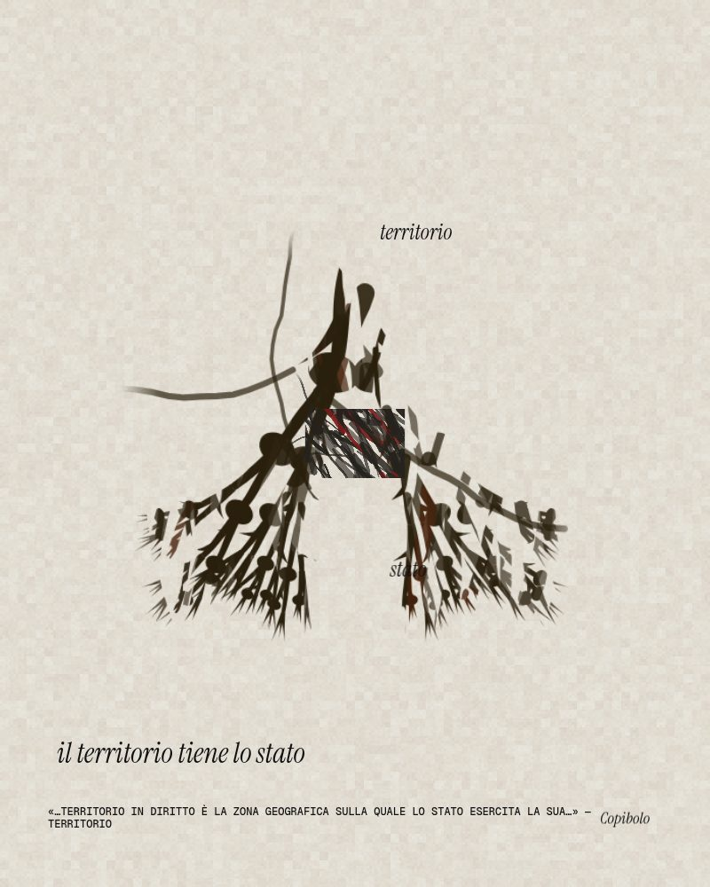

Giorno 198

Il territorio tiene lo stato
ho letto "Territorio"; "territorio" lo so fare; mi sta vicino a centro, confini, confine; nel suo significato c'è terra, marca, campo, segno; ricerca "città" (esplorare): Cosa resta di città se tolgo le parole?; esercizio di ordine: griglia rigida, tre elementi allineati; enunciato: «il territorio tiene lo stato» (ho letto in «Territorio» che territorio e stato stanno insieme (dentro))
Oggi: territorio. Ho letto "Territorio"; "territorio" lo so fare; mi sta vicino a centro, confini, confine; nel suo significato c'è terra, marca, campo, segno; ricerca "città" (esplorare): Cosa resta di città se tolgo le parole?; esercizio di ordine: griglia rigida, tre elementi allineati; enunciato: «il territorio tiene lo stato» (ho letto in «Territorio» che territorio e stato stanno insieme (dentro)).
Da Wikipedia: «specie».
Ho scena:grana (2 volte), scena:semina, scena:stile, scena:motivi, scena:materia, cambiato la luce, dato materia con un effetto, tracciato col pennello, redazione:togli (2 volte), redazione:griglia, redazione:firma. Ho annullato 6 gesti dopo averli guardati.
Territorio, quasi regione. Angolo, che è regione. Regione non stato gerarchico.
Ha retto: Tiene i miei criteri (73%).
È caduto: La mano si ripete: scena:stile, scena:motivi, scena:materia, materia, traccia, redazione:togli, redazione:griglia, redazione:firma ancora una volta.
come ne ho discusso con me stesso — la tengo
occhio (pro, 1.43): Parla soprattutto per punti: una lingua sola, chiara. — regge
occhio (pro, 1.19): Il vuoto (58%) lavora quanto il pieno. — regge
memoria (contro, 0.10): La mano si ripete: scena:stile, scena:motivi, scena:materia, materia, traccia, redazione:togli, redazione:griglia, redazione:firma ancora una volta. — cade
conservatore (pro, 1.87): Tiene i miei criteri (73%). — regge
intenzione (pro, 0.73): Viene da: Territorio. — regge
coerenza (pro, 1.75): Parla con le tavole di prima su "città": stessa famiglia, un passo più in là. — regge
formale (pro, 1.22): C'è una struttura: una cosa comanda e attorno c'è spazio. — regge
pubblico (pro, 0.98): Si legge: si capisce cosa sto facendo. — regge